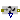
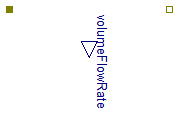

Extends from Modelica.Icons.SensorsPackage (Icon for packages containing sensors).
| Name | Description |
|---|---|
|  FlowMeasure | Measurement of flux through semipermeable membrane |
Measurement of flux through semipermeable membrane

Extends from Interfaces.OnePort (Osmotic one port), Modelica.Icons.RotationalSensor (Icon representing a round measurement device).
| Type | Name | Description |
|---|---|---|
| OsmoticPort_a | q_in | Forward flux through membrane |
| OsmoticPort_b | q_out | Backward flux through membrane |
| output VolumeFlowRateOutput | volumeFlowRate | Flux through membrane [m3/s] |